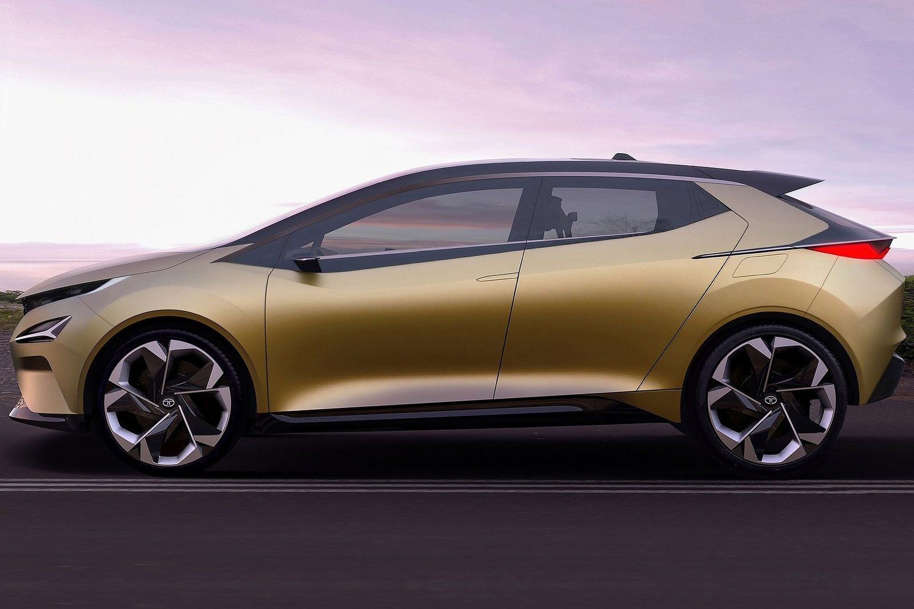
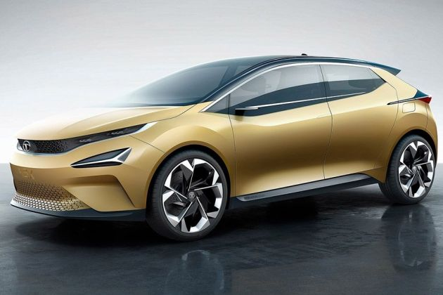
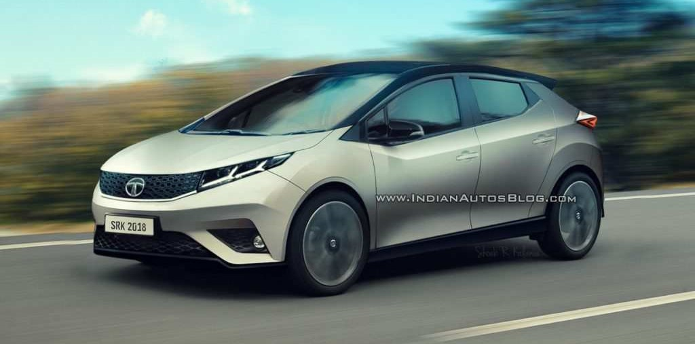
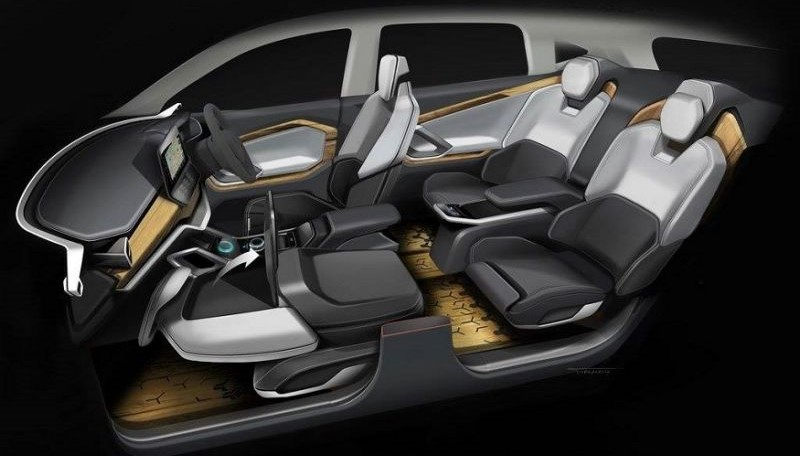
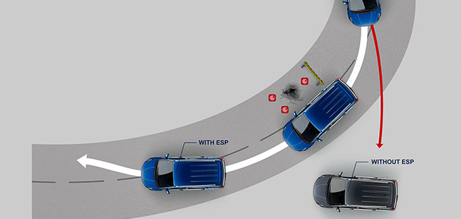
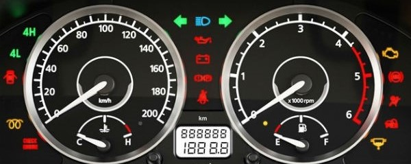

TATA 45X
With many first-in-segment features and the fluidic 2.0 design philosophy, this car is a built to make everyday an adventure.
REVIEW
The Tata Motors is consistent in introducing trendy design models with superior performance factors. The new upcoming Tata X 451 model would feature the new design exteriors with stylish body contours, headlights with daytime running lights and ORVMs with integrated turn indicators. The interiors will have the new multi-information display instrument cluster, automatic climate control, infotainment system with a touchscreen display and surround sound system. The safety features of dual front airbags, ABS with EBD, and advanced technology drive mode selection, start/stop button, park assist system would be offered in this model.The Tata 45X will be pitted against the Maruti Baleno and the Hyundai Elite i20 and Tata Motors might launch the premium hatchback with a price tag which undercuts its rivals. The Tata 45X will be based on the new Advanced Modular Platform (AMP) which is now called as Alfa.

Styling
The Tata X451 exteriors will feature the new headlights with LED daytime running lights, radiator grille with chrome surrounds and futuristic design of the bonnet and fenders giving it a dynamic stance. The side profile will have the ORVMs with integrated indicators and power adjust feature, stylish body contours on the door panel and new set of alloy wheels in the top variants. At the rear, the tailgate with the innovative design of integrated spoiler, new tail lamps and the broad design rear bumpers with reflectors will give it a grand on the road image.
Tata has used an evolution of its Impact design language (now suffixed with 2.0), which means the hatchback sports a strong and confident stance, with slim headlamps and a well-defined ‘humanity line’ that links the lights and grille. The Indian carmaker had revealed that cars featuring Impact Design 2.0 will have segment-leading wheel sizes, and the show car at the expo seemed to stand on 18-inchers. However, the wheel size, along with the overall styling, is expected to be toned down slightly for the production-spec version.

Performance
The Tata X451 specifications will be available in the upgraded version of the present generation 1198cc three-cylinder petrol engine delivering power output of 110PS at 5000RPM and torque of 170Nm at 1750-4000RPM. The diesel version will have the 1497cc four-cylinder engine with a power of 110PS at 3750RPM and torque of 260Nm at 1500-2750RPM. The transmission system will feature the six-speed manual transmission system with a drive connected to the front wheels.
The refinement in the performance of the engine and the aerodynamic design would be further improved with the drive mode selection of Eco, City, and Sports mode. The power steering system with smooth changing of gears and comfort posture of the driver assist for effortless driving and comfort over long drives.

Comfort & Quality
The Tata X451 interiors will have the new instrument cluster with a multi-information display including average fuel consumption, distance to empty, and voice alerts for the easy attention of the users. The driver seat with height adjust feature, rear seats with ample leg space and headroom with foldable backrest for extending the luggage space can be expected. The utility and convenience features of air-cooled glove box, fully automatic climate control with rear air vents, power windows, smart key push button start, and the infotainment system with touchscreen display can be expected in the top variants.
Since it will come as premium offering, the material quality and fit and finish are also likely to be of top-notch. For connectivity purpose, the Tata 45X premium hatchback could be equipped with a touchscreen infotainment system that will be compatible to smartphone apps such as Apple CarPlay and Android Auto. It will also support navigation system.

Safety
The Tata X451 braking system will have the disc brakes on the front and drum brakes at the rear with anti-lock braking system and electronic brake force distribution for perfect control over all road conditions. The strong build quality of the body shell and panels, the dual front airbags, seat belt remainders will be featured for complete protection of the occupants. The additional safety features of rear defogger, rear fog lamp, and park assist sensors with the audio and visual display would be featured in this model.
And since it will be launched in late-2019, we also expect the engines to conform to BSVI emission standards. It will also adhere to the latest safety standards, which means features like dual front airbags, ABS and Isofix child seat mounts will be standard.

Features
The Tata 45X will be loaded with premium features such as a large touchscreen infotainment system, automatic climate control, premium material for the seat upholstery and much more. The hatchback will also get a host of safety features and expect 45X to be priced aggressively to take on the competition.
Similar to the Tata H5X SUV, the 45X will also get a production name. Tata Motors named the H5X SUV as and the premium hatchback will also get a unique moniker. Compared to the concept model, the production version of the 45X will be slightly downsized in dimension as per the regulations. Tata has used an evolution of its Impact design language (now suffixed with 2.0), which means the hatchback sports a strong and confident stance, with slim headlamps and a well-defined ‘humanity line’ that links the lights and grille.
Fuel Economy
The Tata X451 mileage would range from 18kmpl from the petrol engine and 25kmpl from the diesel engine version. The actual mileage figures can vary slightly depending upon the final configuration of the vehicle including the kerb weight, vehicle dynamics. On an average, a mileage of 15 to 18kmpl from petrol version and 22to 25kmpl from diesel version can be expected in city and highway conditions respectively.
